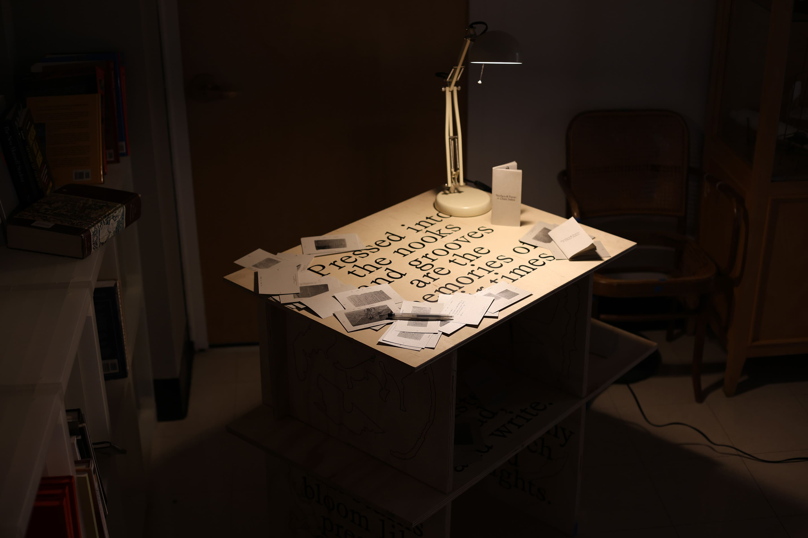
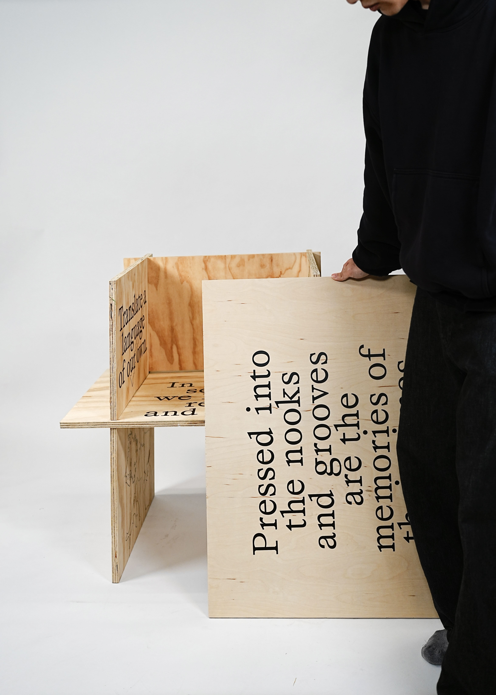
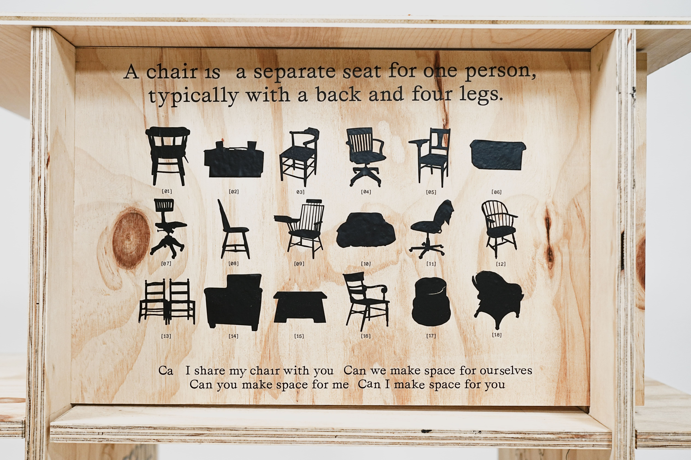
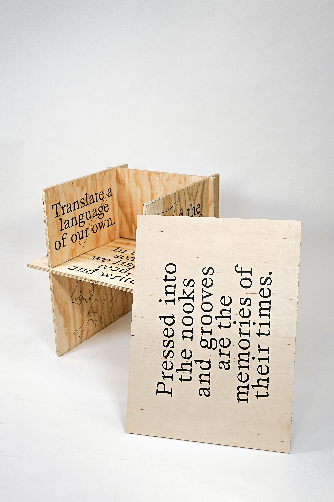
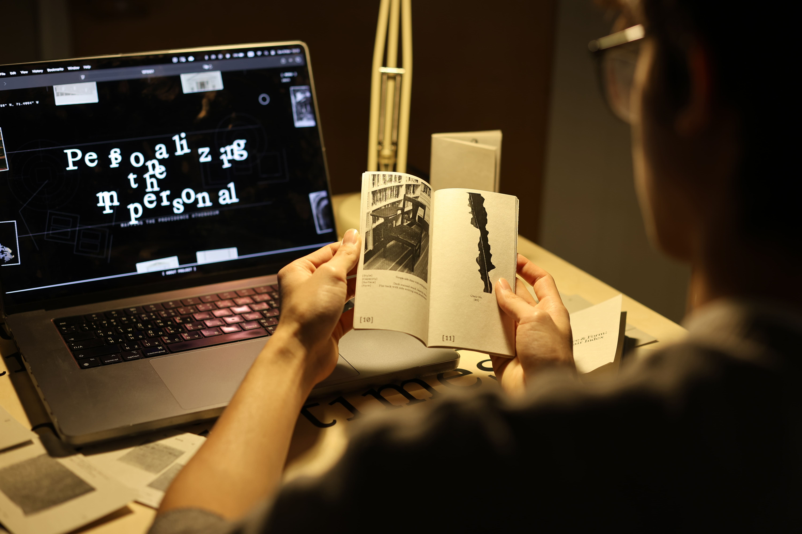

This site analysis of the Athenaeum Library centers on the theme "Personalizing the Impersonal." Unlike many public libraries, the Athenaeum is defined by its intimacy, an atmosphere shaped not only by books, but by the people who use, move through, and care for the space. Our analysis focuses on how individual presence and small gestures transform a public institution into a deeply personal environment.
To explore this intimacy, we present four different kinds of data:
Water Fountain Usage
We track the use of the water fountain located at the front of the Athenaeum as a subtle indicator of pause, care, and daily ritual within the space.
Interview
An interview with the Head of Research & Library Services offers insight into how the Athenaeum balances public access with personal engagement, revealing how policy, curation, and care shape user experience.
Interactive Space (Mezzanine Floor)
An interactive floor installation on the Mezzanine invites visitors to physically engage with the space, creating a moment of intimacy within a shared public environment.
Chair Archive Installation
Every chair in the Athenaeum is unique, donated over time by individuals. We translate this collection into a table-based installation with booklets, documenting the chairs as data—objects that quietly carry personal histories into the collective space.




